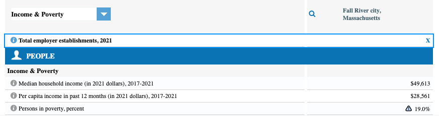
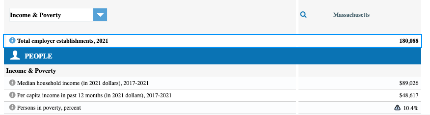

Evictions in MA amid the pandemic
Are evictions on the uptick in Massachusetts?
I scraped data from the Massachusetts Trial Court to get some insight.
In Massachusetts, landlords can obtain a court order to evict a tenant. The court system's data reflects court orders for possession as well as money judgments since October 2020. That means this dataset isn't just about evictions -- and it won't give us insight into how these figures compare to pre-pandemic levels. The state court system says data is for eviction orders on grounds of non-payment of rent, though adds that Boston Municipal and District Court data includes a "small proportion of eviction cases based on grounds other than non-payment of rent."
In April 2020, Massachusetts imposed a COVID-19 eviction moratorium that expired in August 2020.
Some localities passed their own eviction moratoriums that have since expired - Boston lifted its own moratorium on on March 30, 2022.
Lawmakers have given tenants some help, including protection from eviction in cases where tenants are in the process of getting rental assistance.
But that protection ended March 31, despite concern from housing advocates about a potential rise in homelessness and housing instability.
So, how are renters in Massachusetts faring now?
Evictions and money judgments against tenants rose to 1,070 in June 2023 -- a 180% increase from June 2021.
How does that compare to pre-2020 levels? According to data on Masslandlords.net, in June 2019 - Massachusetts saw 850 judgement orders for non-payment and 231 court-ordered evictions.
Overall, Massachusetts courts have issued about 10,000 eviction orders and/or money judgments since January 2022 alone.
Since January 2022, communitites with the most eviction orders and money judgments include Springfield, Worcester, Fall River, New Bedford, Lowell, Quincy and Lynn.
I then matched the community data with Census population estimates to get a sense of where evictions and money judgments are disproportionately high.
I found that evictions and money judgments are disproportionately highest in Fall River, Holyoke, Springfield, Pittsfield and New Bedford.
I then looked at Census data to get a sense of Fall River's demographics in particular.
 Nearly one in five people are living in poverty in Fall River, where median household income is $49,613 in 2021 dollars.
That's double the statewide rate of 1 in ten people in poverty. And across Massachusetts, median household income is about $89,000.
And according to Censusreporter.org , just 15.8% of people in Fall River have a bachelor's degree -- about one-third of the rate in Massachusetts (46.6%).
Link to Github repository: here